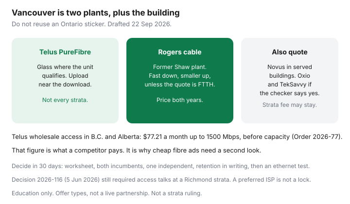

Internet · Vancouver
Vancouver Home Internet Shopping: Telus PureFibre vs Rogers/Shaw Cable Deals
Metro Vancouver households often stay with whoever wired the place: Telus, or Rogers on the cable network Shaw built before the 2023 acquisition. That habit skips the only comparison that matters. PureFibre is glass to the suite where the address qualifies, usually with an upload close to the download. Rogers cable is coax for the last stretch on most existing homes, with a fast download and a smaller upload. Some buildings have neither as a choice, because a strata bulk deal or a Novus drop already occupies the riser. This is a 30-day shop for Vancouver, Burnaby, and Surrey addresses. It is not a winner for the whole region.
Disclosure: Home internet plans, including PureFibre, cable, and wholesale or building-fibre offers, are offer types. Saving Optimizer does not claim a live partnership with Telus, Rogers, Shaw, Novus, Oxio, TekSavvy, or anyone else. Bring your own address quote. Education only.
Key takeaways
- Do not paste an Ontario Bell or Rogers card onto a Vancouver suite. The plants here are Telus PureFibre, Rogers cable on the former Shaw network, and building fibre where a tower has it.
- PureFibre wins on upload when the unit is actually on glass. Cable wins when you mostly download and the after-promo 24-month total is lower. Read both numbers on the quote.
- Independents worth a checker pass: Oxio on Rogers plant in B.C., TekSavvy where the unit qualifies, and Novus in buildings it serves. Wholesale Telus fibre is not a bargain-bin product. Telecom Order 2026-77 prices Telus access in Alberta and B.C. at $77.21 a month up to 1500 Mbps before capacity charges.
- A strata bulk fee can survive your personal switch. Telecom Decision 2026-116 (5 June 2026) still had to order access talks at a Richmond strata. Preference is not a federal exemption.
- Decide inside 30 days with a written sheet: technology, both prices, equipment, term, and the building fee. Calendar the promo end the day you order.
PureFibre footprint versus cable at Vancouver, Burnaby, and Surrey addresses
Telus has the widest fibre-to-the-home footprint in the region. That sentence is not “every suite.” A 1960s walk-up, a strata that never signed an access agreement, and a brand-new phase can each fail the checker for different reasons. Rogers, selling internet on the cable network it acquired with Shaw, covers a large share of houses and many buildings with coax. Rogers also has fibre drops in some newer developments. The Xfinity or Ignite logo does not tell you which. Burnaby and Surrey are not one price zone inside Vancouver. Qualify the unit.
How to tell the plants apart without a truck roll, using the test in the fibre versus cable guide:
- Telus quote says PureFibre, and upload is in the same range as download: treat it as glass.
- Telus quote is internet but the upload is a small fraction of the download: you may be on copper, not PureFibre. Do not pay a fibre price for that.
- Rogers quote shows a large download and an upload in the tens or low hundreds of megabits: treat it as cable unless the quote names fibre to the home. The western Oxio comparison row dated 11 Sep 2026 was 1500 Mbps down and 200 Mbps up at $95. That shape is cable, and it is a dated table, not your cart.
Ignore a friend’s bill from across the bridge and ignore an Ontario promo. Our Rogers versus Bell dollar cards are Ontario, fetched 21 Sep 2026. They are the wrong sticker for a Kingsway suite.

Promo pricing versus loyalty pricing after 12 to 24 months
Both incumbents advertise a low opening price and a higher regular price, or a term that quietly becomes the regular price. The cheap month is not the product. The product is the average you will actually pay.
| Line | Telus PureFibre quote | Rogers cable quote |
|---|---|---|
| Down / up and the word they use for the plant | ||
| Monthly price, months 1 to 12 | ||
| Monthly price, months 13 to 24 | ||
| What a “price lock” actually freezes | ||
| Gateway, pods, install | ||
| Early cancellation fee, and does it shrink? | ||
| 24-month total |
Telus has marketed multi-year price locks on some PureFibre terms. Read the months, whether the lock is the base rate or a credit, and what happens if you change tier or move. A lock that excludes equipment, or that dies when you refuse a TV package, is a slogan. Rogers term cards in other provinces, including the 24-month Auto-Pay offers recorded on 21 Sep 2026, show the same pattern: a lower offer price and a higher regular price. Ask the Vancouver checkout to show both. If the second price is missing, do not invent it. Screenshot the page and ask in chat for the regular rate before you submit.
Loyalty pricing is the rate you are on after the promo, or the rate retention offers so you will not leave. It is not a moral discount for having been a Shaw customer in 2019. If the loyalty rate is above a qualified independent or the other incumbent’s 24-month total, it is not loyalty. It is inertia.
Independents worth quoting in Metro Vancouver
Run these when the address tool lists them. Skip them when it does not.
- Oxio. In British Columbia the plant pattern in our Oxio guide is Rogers, which in this region means the cable network. Flat rate, included router, six-province list that includes B.C. The 11 Sep 2026 western 1.5 Gbps row was $95 with 200 Mbps up. Useful if your worksheet fits in that upload. Not a substitute for PureFibre if you send large files all afternoon.
- TekSavvy. Worth a cart check on cable and, where they sell it, on wholesale fibre. Final wholesale rates in Telecom Order 2026-77 did not create a deep discount. Telus access in Alberta and B.C. is $77.21 a month for speeds from 15 to 1500 Mbps, and $81.81 above that up to 5000 Mbps, before the capacity charge the competitor pays. A retail fibre offer near or under the access figure is a clue that you are looking at cable, a promo, or a network the independent owns, not at a wholesale Telus strand plus a normal margin. TekSavvy’s own comment on that April 2026 order was that the rates stayed high. Believe the checkout.
- Novus and other building fibre. In towers they serve, the drop can be symmetrical and priced as a building product rather than a wholesale resale. Add the row. Do not assume every Vancouver high-rise has it.
- A familiar eastern logo on a B.C. checker. Order 2026-77 notes Bell’s plan to offer retail internet on aggregated wholesale fibre in Alberta and British Columbia. If Bell appears, it may be a reseller of Telus plant, not a Bell-built network. Judge the upload, the 24-month price, and the contract. The logo is not the glass.
Cable wholesale can still be the cheap row for a download-heavy household. That is the point of quoting Oxio or TekSavvy beside Rogers before you call Telus retention.
Winback timing when a promo ends
Start the clock 30 days before the credit dies, not on the morning the bill jumps. The seven-day plan is the emergency version. The planned version:
- Read the contract for the end date. A 90-day promo notice under CRTC 2026-67 is enforced from 13 April 2027, not this month. Keep your own reminder. The Code guide has the detail. Telus is on the Code’s large-provider list. A small wholesaler may not be.
- Two weeks out, refresh the other incumbent and one independent at the same unit. Save the totals.
- Ask retention to beat the number you will take. For a Telus customer, that number is often a Rogers or Novus or Oxio total. For a Rogers customer, it is often a PureFibre total with the upload written on it.
- Get rate, months, upload, equipment, and any early cancellation fee in one email before you decline the switch. Home-internet term fees can still apply after CRTC 2026-43. Activation fees with no technician generally should not.
If you are inside a strata bulk contract, retention at Telus or Rogers may be the wrong desk. The contract might be with the strata. Read the next section before you book a personal winback you are not allowed to use.
Apartment bulk-deal caveats
Vancouver, Burnaby, and Surrey stratas sign bulk deals constantly. The fee lands in strata contributions. You can sometimes order a personal plan anyway. You often cannot stop paying the bulk portion. The CRTC’s apartment and condo page, read 22 Sep 2026, says the building cannot limit you to one provider, and that bundled charges may continue. Provincial strata rules, not the CRTC, govern the fee itself.
Telecom Decision 2026-116 (Gatineau, 5 June 2026) is a local illustration, not a promise about your building. CIK Telecom had been refused access to a Richmond strata (LMS 818). The Commission directed negotiations and a signature timeline. A board that says “we already have Telus, the owners like it” has described a preference. It has not created an exemption from the access condition in Telecom Decision 2003-45. The full checklist is the rights guide.
Before you sign a lease or a purchase, ask which provider is in the fee, what the upload is on ethernet at 8 p.m., whether you can opt out, and whether Novus, Telus, and Rogers are all already in the main terminal room. An installed second provider means you can usually order without a CRTC file. A single provider and a locked riser means you budget the bulk fee as sunk and decide whether a personal overlay, or a 5G home gateway as a stopgap product type, is worth paying twice.
Shopping checklist for a 30-day decision
Thirty days is long enough to see one billing cycle of your current plan and short enough that a promo on the quote may still exist. Do not stretch it into a season of browser tabs.
| When | Action |
|---|---|
| Day 1 | Write the worksheet speeds from the household guide. Find the promo end date on your current bill. Note any strata or landlord internet line and whether it is optional. |
| Day 2 | Run Telus and Rogers at the unit. Record down, up, months, both prices, equipment, and the cancellation fee. Screenshot both. |
| Day 3 | Run Oxio, TekSavvy, and Novus or any other name the building posts. Delete the ones the checker refuses. Add a 24-month total for each survivor. |
| Day 4 | If you are an existing customer, send retention the competing total. Ask for the reply by email. Give them a few business days, not a month. |
| Day 10 | Choose the lowest 24-month total that meets the upload. If two are close, take higher upload and the cleaner exit. Order. Calendar the next promo end. |
| Day 30 | Ethernet test at noon and at 8 p.m. If the wire misses the plan, you are still inside a short window to complain with evidence. If only Wi-Fi misses, fix the radio before you upgrade the tier. Hardware types are covered in buy versus rent. |
If PureFibre and cable are within a few dollars and anyone in the home uploads for work, take PureFibre. If cable is cheaper by a margin you can feel and the upload clears the worksheet, take cable or the cable wholesaler and do not apologise for it. Either way, the decision is the sheet, not the incumbent you inherited with the keys.
Sources & date stamps
- Telecom Order CRTC 2026-77 (Gatineau, 24 April 2026) — TELUS aggregated FTTP access, Alberta and British Columbia: $77.21 (15–1500 Mbps) and $81.81 (1501–5000 Mbps), plus a capacity rate of $42.12 per 100 Mbps charged to the competitor, not as a simple per-home add-on. Bell’s intention to use wholesale fibre in Alberta and B.C. is noted in the order. Wholesale inputs, not retail bills. Head start on newer builds discussed out to August 2029.
- CRTC apartment and condo page, read 22 Sep 2026 — no single-provider limit; bundled fees may remain. Telecom Decision CRTC 2026-116 (5 June 2026) — Richmond strata LMS 818 and CIK Telecom.
- Oxio province and plant pattern, and the western 1500/200 row at $95 — our Oxio guide, Topicks.ca updated 11 Sep 2026, Oxio moving FAQ read 21 Sep 2026. The cart overrides the row.
- Internet Code promo-notice timing — CRTC 2026-67 enforced 13 April 2027, as explained in our Code guide. CRTC 2026-43 activation-fee rules in force 12 June 2026; home-internet term ETFs can remain.
- Rogers and Bell Ontario dollar cards are intentionally not used as Vancouver prices. They are documented in our Rogers versus Bell guide, fetched 21 Sep 2026, for a different plant.
Frequently asked questions
Is Shaw still a separate internet company in Vancouver?
Rogers acquired Shaw in 2023. In Metro Vancouver you are usually shopping Rogers cable on that former Shaw network, versus Telus PureFibre. Some people still say Shaw out of habit. The quote and the bill should say who you are paying.
Is Telus PureFibre always better than Rogers cable?
It is better on upload when the suite is actually on fibre to the home. It is not automatically cheaper over 24 months, and it is not available in every building. If your use is mostly download and cable’s after-promo total is lower, cable can be the rational buy.
Can Oxio or TekSavvy beat Telus on fibre?
Quote them. Do not assume a large gap. The wholesale access rate Telus can charge competitors in Alberta and B.C. is $77.21 a month up to 1500 Mbps before capacity, under Telecom Order 2026-77. A very cheap “fibre” tile is often cable or a building network the company owns. The address tool is the check.
My strata includes internet. Can I switch?
You can usually order another provider if the building allows access and the suite has a path for the wire. You may still pay the included amount inside strata fees. The CRTC’s rule stops the board from blocking carriers. It does not, by itself, delete a strata fee. Ask the strata whether an opt-out exists.
When should I call winback?
Before the promo ends, with a competing 24-month total already saved. Ask for the rate, the months, the upload, the equipment, and any cancellation fee in email. If the strata holds the contract, call the strata first. Retention cannot discount a bill that is not yours.